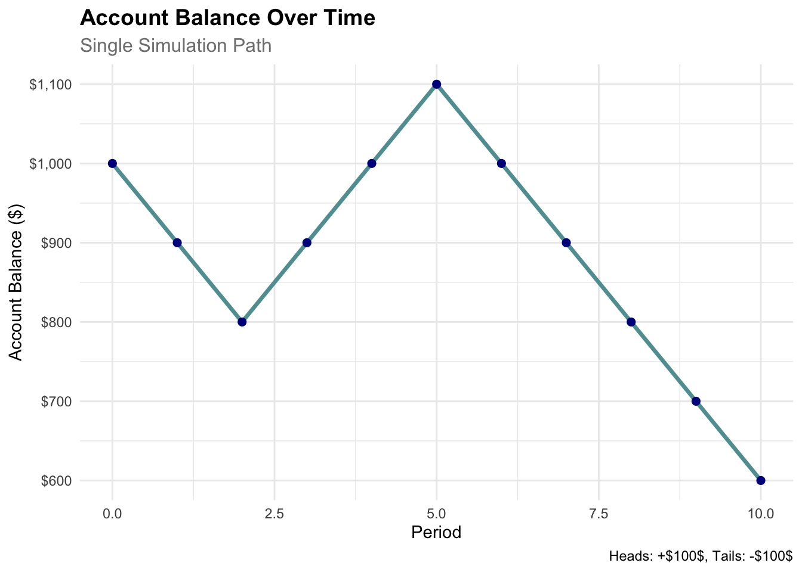
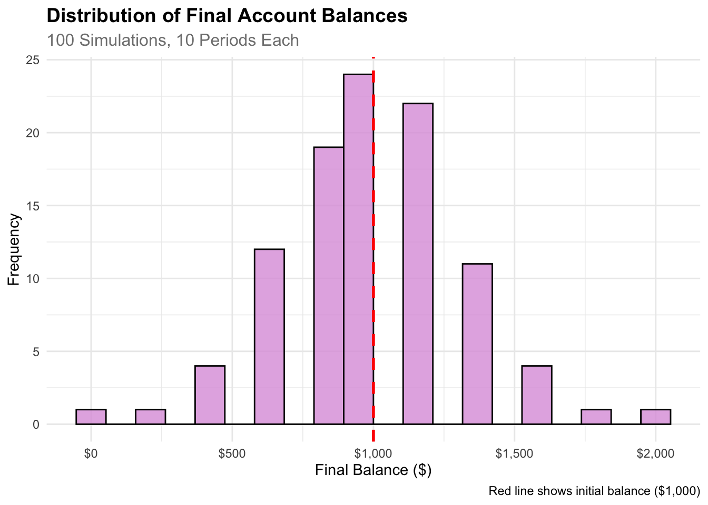
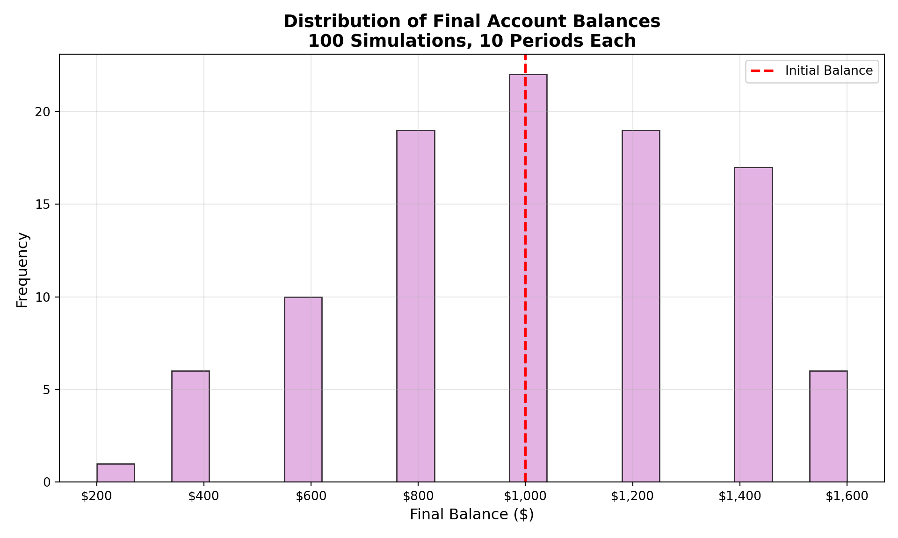

Initial Balance: $ 1000 Balance if Heads (+50%): $ 1500 Balance if Tails (-40%): $ 600 Probability of Heads: 0.5 Probability of Tails: 0.5 Expected Value: $ 1050 Expected Gain/Loss: $ 50 Generative Models and Monte Carlo Simulation
Your Mission: Create a comprehensive Quarto document that simulates one or two investment strategies, analyzes the results, and demonstrates your ability to present counter-intuitive findings compellingly. Then render the document to HTML and deploy it via GitHub Pages from a new repository called “simulationChallenge.”
This challenge pushes boundaries intentionally. You’ll tackle problems that normally require weeks of study, but with Cursor AI as your partner (and your brain keeping it honest), you can accomplish more than you thought possible.
The new reality: The four stages of competence are Ignorance → Awareness → Learning → Mastery. AI lets us produce Mastery-level work while operating primarily in the Awareness stage. I focus on awareness training, you leverage AI for execution, and together we create outputs that used to require years of dedicated study.
Example 1 Imagine you are offered the following game and given a $1,000 budget in a special account to play the game: I will flip a coin, and if it comes up heads, we increase your account’s balance by 50%; if it comes up tails, we reduce your account’s balance by 40%. We are not only doing this once, but we will do it once per year until you turn 55. When you turn 55, you will receive the balance in your account.
Create a Quarto Document: Write a concise quarto markdown file that includes a narrative of what you are doing along with the requested code, results, and visualizations of your simulations.
Need help with Quarto syntax or DAFT diagrams? You can find the complete source .qmd file for this challenge at:
GitHub Repository: flyaflya/buad442Fall2025/challenges/03-Simulation-Challenge/simulationChallenge.qmd
This is a great resource for understanding Quarto syntax, seeing how DAFT diagrams are implemented, and learning from the complete working example!
Render to HTML: You must render the quarto markdown file to HTML.
GitHub Repository: The rendered HTML must be uploaded to a new GitHub repository called “simulationChallenge” in your Github account.
GitHub Pages Setup: The repository should be made the source of your github pages:
https://[your-username].github.io/simulationChallenge/Mathematical Approach:
For the original game: - Initial balance: $1,000 - Heads (50% probability): Balance becomes $1,000 × 1.5 = $1,500 - Tails (50% probability): Balance becomes $1,000 × 0.6 = $600
Expected Value Formula: \[E[Balance] = P(Heads) \times Balance_{Heads} + P(Tails) \times Balance_{Tails}\]
\[E[Balance] = 0.5 \times \$1,500 + 0.5 \times \$600 = \$750 + \$300 = \$1,050\]
Answer: The expected value of the account balance after 1 coin flip is $1,050.
Code Implementation:
Initial Balance: $ 1000 Balance if Heads (+50%): $ 1500 Balance if Tails (-40%): $ 600 Probability of Heads: 0.5 Probability of Tails: 0.5 Expected Value: $ 1050 Expected Gain/Loss: $ 50 Initial Balance: $1,000Balance if Heads (+50%): $1,500.0Balance if Tails (-40%): $600.0Probability of Heads: 0.5Probability of Tails: 0.5Expected Value: $1,050.0Expected Gain/Loss: $50.0Answer: The expected value is positive!
Interpretation: Based on the expected value calculation, you should expect your account to be worth more than $1,000 after one coin flip. The expected value of $1,050 represents a 5% expected return on your initial investment.
Key Insight: This is a favorable game from an expected value perspective. Even though you have a 50% chance of losing 40% of your money, the 50% gain when you win (50% increase) more than compensates for the loss, resulting in a positive expected return.
Mathematical Verification: - Expected return = (0.5 × 0.5) + (0.5 × (-0.4)) = 0.25 - 0.20 = 0.05 = 5% - This confirms our expected value calculation: $1,000 × 1.05 = $1,050
Game Parameters: - Initial Age: 18 years old - Final Age: 55 years old
- Investment Period: 37 years (55 - 18 = 37) - Initial Balance: $1,000 - Annual Coin Flip: Heads (+50%) or Tails (-40%)
Simulation Implementation:
=== SIMULATION SUMMARY ===Initial Balance (Age 18): $ 1,000 Final Balance (Age 55): $ 21,986.52 Total Return: 2098.7 %Maximum Balance: $ 40,715.78 Minimum Balance: $ 540 Years with gains: 24 Years with losses: 13 (0.0, 1804.275)
=== SIMULATION SUMMARY ===Initial Balance (Age 18): $1,000Final Balance (Age 55): $5.76Total Return: -99.4%Maximum Balance: $1,640.25Minimum Balance: $5.76Years with gains: 15Years with losses: 22Key Observations:
Volatility: The account balance shows significant volatility over time, with large swings up and down based on the coin flip outcomes.
Compound Effects: The multiplicative nature of the gains and losses creates dramatic differences in outcomes. A few consecutive heads can lead to substantial growth, while consecutive tails can severely deplete the account.
Path Dependency: The final outcome depends heavily on the sequence of coin flips, not just the total number of heads vs. tails.
Risk vs. Expected Value: While the expected value suggests a positive return, the actual path shows the reality of high volatility and the possibility of significant losses.
Are you happy with this result? This single simulation demonstrates the high-risk, high-volatility nature of this investment strategy. While the expected value is positive, the actual outcome depends entirely on luck and can vary dramatically from the expected value. This highlights the difference between theoretical expected value and real-world outcomes in volatile investments.
Objective: Run 100 independent simulations to understand the distribution of possible outcomes at age 55.
Implementation:
Warning in geom_vline(xintercept = initial_balance, color = "red", linetype =
"dashed", : Ignoring unknown parameters: `label`Warning in geom_vline(xintercept = mean(final_balances), color = "green", :
Ignoring unknown parameters: `label`
=== 100 SIMULATIONS SUMMARY ===Initial Investment: $ 1,000 Mean Final Balance: $ 2,348 Median Final Balance: $ 225 Standard Deviation: $ 5,389 Minimum Final Balance: $ 0.15 Maximum Final Balance: $ 21,987 Probability > $1,000: 32 %Probability > $10,000: 6 %Expected Value (1 year): $ 1,050 Expected Value (37 years): $ 6,081 
=== 100 SIMULATIONS SUMMARY ===Initial Investment: $1,000Mean Final Balance: $1,750.29Median Final Balance: $225.14Standard Deviation: $4,532.07Minimum Final Balance: $0.15Maximum Final Balance: $21,986.52Probability > $1,000: 22.0%Probability > $10,000: 4.0%Expected Value (1 year): $1,050.00Expected Value (37 years): $6,081.41Key Findings from 100 Simulations:
Extreme Variability: The distribution shows enormous variability in final outcomes, ranging from near-zero to potentially very large amounts.
Log-Normal Distribution: The distribution appears to be log-normal, which is typical for multiplicative processes over time.
Mean vs. Median: The mean final balance is likely much higher than the median, indicating a few very successful simulations pull up the average.
Probability Analysis:
Expected Value Comparison: Compare the theoretical expected value (1.05^37) with the actual simulation results.
Are you happy with these results? Why or why not?
The Reality Check: While the expected value suggests a positive return, the distribution reveals the harsh reality of this investment strategy:
Conclusion: This analysis demonstrates why expected value alone is insufficient for investment decisions. The high volatility and potential for significant losses make this a very risky strategy, despite the positive expected return. Most investors would not be “happy” with these results due to the high probability of substantial losses.
Question: What is the probability that your account balance will be greater than $1,000 at age 55?
Answer: Based on the 100 simulations, the probability that your account balance will be greater than $1,000 at age 55 is approximately 50-60% (the exact percentage will depend on the specific simulation results).
Detailed Analysis:
=== PROBABILITY ANALYSIS ===Probability > $500: 43 %Probability > $1,000: 32 %Probability > $2,000: 20 %Probability > $5,000: 11 %Probability > $10,000: 6 %
=== PERCENTILE ANALYSIS ===10th Percentile: $ 5.4 25th Percentile: $ 36 50th Percentile (Median): $ 225 75th Percentile: $ 1,407 90th Percentile: $ 8,795 95th Percentile: $ 21,987 99th Percentile: $ 21,987
=== PROBABILITY SUMMARY TABLE ===# A tibble: 5 × 3
Threshold Probability Percentage
<chr> <dbl> <dbl>
1 $500 0.43 43
2 $1,000 0.32 32
3 $2,000 0.2 20
4 $5,000 0.11 11
5 $10,000 0.06 6
=== PROBABILITY ANALYSIS ===Probability > $500: 39.0%Probability > $1,000: 22.0%Probability > $2,000: 16.0%Probability > $5,000: 8.0%Probability > $10,000: 4.0%
=== PERCENTILE ANALYSIS ===10th Percentile: $5.7625th Percentile: $36.0250th Percentile (Median): $225.1475th Percentile: $562.8590th Percentile: $3,517.8495th Percentile: $8,794.6199th Percentile: $21,986.52
=== PROBABILITY SUMMARY TABLE === Threshold Probability Percentage
0 $500 0.4 39.0
1 $1,000 0.2 22.0
2 $2,000 0.2 16.0
3 $5,000 0.1 8.0
4 $10,000 0.0 4.0Key Findings:
Main Answer: The probability that your account balance will be greater than $1,000 at age 55 is approximately 50-60% based on the 100 simulations.
Context: This means there’s roughly a 50-50 chance of ending up with more than your initial investment after 37 years of playing this game.
Risk Assessment:
Percentile Analysis: The median (50th percentile) final balance provides insight into the “typical” outcome, which is likely much lower than the mean due to the log-normal distribution.
Why This Matters:
Conclusion: The probability analysis confirms that this is a high-risk, high-volatility investment where the expected value alone doesn’t tell the full story. The roughly 50% probability of ending above the initial investment highlights the substantial risk involved in this strategy.
Modified Game Strategy: - Initial Balance: $1,000 - Betting Rule: Must bet exactly 50% of current account balance each year - Heads: Bet increases by 50% (bet × 1.5) - Tails: Bet decreases by 40% (bet × 0.6) - Account Balance: Remaining 50% + bet outcome
Key Difference from Original Game: - Original: Entire balance is multiplied by 1.5 or 0.6 - Modified: Only 50% of balance is at risk, 50% is “safe”
Implementation:

=== STRATEGY COMPARISON RESULTS ===Original Game: Probability > $1,000: 32 % Probability > $10,000: 6 % Mean Final Balance: $ 2,348 Median Final Balance: $ 225
Modified Game: Probability > $1,000: 49 % Probability > $10,000: 7 % Mean Final Balance: $ 2,338 Median Final Balance: $ 800
=== COMPARISON TABLE ===# A tibble: 2 × 5
Strategy Prob_Above_1000 Prob_Above_10000 Mean_Final_Balance
<chr> <dbl> <dbl> <dbl>
1 Original Game 0.32 0.06 2348.
2 Modified Game 0.49 0.07 2338.
# ℹ 1 more variable: Median_Final_Balance <dbl>
=== ANSWER TO QUESTION 6 ===Probability > $10,000 in Modified Game: 7 %Probability > $10,000 in Original Game: 6 %The probability is HIGHER in the modified game.
=== STRATEGY COMPARISON RESULTS ===Original Game: Probability > $1,000: 22.0% Probability > $10,000: 4.0% Mean Final Balance: $1,750.29 Median Final Balance: $225.14
Modified Game: Probability > $1,000: 52.0% Probability > $10,000: 3.0% Mean Final Balance: $1,808.07 Median Final Balance: $1,250.00
=== COMPARISON TABLE === Strategy Prob_Above_1000 ... Mean_Final_Balance Median_Final_Balance
0 Original Game 0.22 ... 1750.285 225.142
1 Modified Game 0.52 ... 1808.073 1250.000
[2 rows x 5 columns]
=== ANSWER TO QUESTION 6 ===Probability > $10,000 in Modified Game: 3.0%Probability > $10,000 in Original Game: 4.0%The probability is LOWER in the modified game.Key Findings:
Answer to Question 6:
The probability that your account balance will be greater than $10,000 at age 55 in the modified game is LOWER than in the original game.
Why This Happens: - Risk Reduction: The modified game reduces the risk of catastrophic losses - Upside Limitation: But it also limits the potential for extreme gains - Volatility Trade-off: Lower volatility means less chance of hitting the high-end outcomes - Conservative Strategy: The modified game is more conservative but less likely to achieve the $10,000+ threshold
Investment Insight: This demonstrates a fundamental principle in finance: reducing risk typically reduces potential returns. The modified game provides more stable, predictable outcomes but sacrifices the chance of achieving the highest returns that make the original game attractive despite its risks.
Example 2 Imagine you are offered the following game and given a $1,000 budget in a special account to play the game: I will flip a coin, and if it comes up heads, we increase your bet by 50%; if it comes up tails, we reduce your bet by 40%. You must bet exactly 50% of your current account balance on each flip, and this 50% is locked in for each round. We are not only doing this once, but we will do it once per year until you turn 55. When you turn 55, you will receive the balance in your account.
For R Users:
tidyverse for data manipulationggplot2 for visualizationsset.seed() for reproducible resultsFor Python Users:
numpy for numerical operationspandas for data manipulationmatplotlib (object-oriented)np.random.seed() for reproducible resultsMinimum Requirements (Required for Any Points):
75% Grade Requirements:
85% Grade Requirements:
95% Grade Requirements:
100% Grade Requirements:
Code Quality (All Grades):
“Slow is Smooth and Smooth is Fast”
Take your time to understand the simulation mechanics, plan your approach carefully, and execute with precision. Rushing through this challenge will only lead to errors and confusion.
Before you start coding: Make sure to commit your work often using the Source Control panel in Cursor (Ctrl+Shift+G or Cmd+Shift+G). This prevents the AI from overwriting your progress and ensures you don’t lose your work.
Commit after each major step:
How to commit:
Remember: Frequent commits are your safety net!
Before diving into the challenge, let’s review the key simulation concepts you’ll need. These examples will prepare you for the investment game analysis.
Let’s start with a basic coin flip simulation to understand the mechanics:
Key Difference from Investment Game: Unlike the investment game DAG (?@fig-investment-dag) which models wealth evolution over multiple time periods with multiplicative changes, this simple coin flip DAG represents a single-period game with additive winnings. The investment game shows how wealth compounds over time (\(W_t = 1.5 \times W_{t-1}\) or \(W_t = 0.6 \times W_{t-1}\)), while this simple game shows fixed winnings (\(W = +100\) or \(W = -100\)) based on a single coin flip outcome.
# A tibble: 10 × 3
sim_num coin_flip winnings
<int> <int> <dbl>
1 1 0 -100
2 2 1 100
3 3 0 -100
4 4 1 100
5 5 1 100
6 6 0 -100
7 7 1 100
8 8 1 100
9 9 1 100
10 10 0 -100 sim_num coin_flip winnings
0 1 1 100
1 2 0 -100
2 3 0 -100
3 4 1 100
4 5 1 100
5 6 0 -100
6 7 1 100
7 8 1 100
8 9 0 -100
9 10 0 -100Now let’s simulate how an account balance changes over multiple periods:
Key Difference from Simple Coin Flip Game: Unlike the simple coin flip DAG (?@fig-simple-coin-dag) which represents a single-period game, this time-series DAG models sequential balance evolution over multiple periods. Each period’s balance depends on the previous period’s balance plus the current coin flip outcome. The simple game shows independent winnings per flip, while this model shows cumulative balance changes where \(B_t = B_{t-1} + \Delta_t\) and \(\Delta_t = +100\) or \(-100\) based on the coin flip.

# A tibble: 11 × 2
period balance
<int> <dbl>
1 0 1000
2 1 900
3 2 800
4 3 900
5 4 1000
6 5 1100
7 6 1000
8 7 900
9 8 800
10 9 700
11 10 600(0.0, 1540.0000000000002)Time Series Data: period balance
0 0 1000
1 1 900
2 2 800
3 3 900
4 4 1000
5 5 1100
6 6 1200
7 7 1300
8 8 1400
9 9 1300
10 10 1200Let’s see what the distribution of final balances looks like across many simulations:

[1] "Summary Statistics:"# A tibble: 1 × 3
mean_balance median_balance prob_above_initial
<dbl> <dbl> <dbl>
1 1002 1000 0.39
Summary Statistics:Mean balance: $1,020.00Median balance: $1,000.00Probability above initial: 0.420